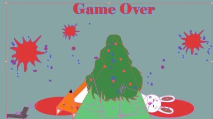
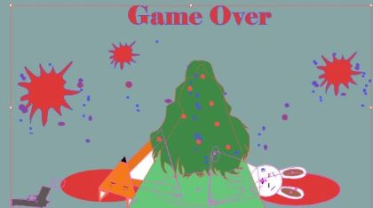

Grafik
Ideudvikling
Jeg startede ud med at have en ideen om, at mit spil skulle omhandle rensning af havet. Dog da vi fik set tidligere eksempler, på denne opgave, indså jeg at denne ide er blevet lavet en del gange før. Derfor besluttede jeg mig for, at finde en ny ide. Dog var jeg overbevist om, at jeg ønskede et spil der sigtede mod noget etisk korrekthed.
Jeg kom derfor frem til, at min spil skulle omhandle beskyttelse af dyr. Jeg valgte derfor at målet, med spillet skulle være at skyde de onder jagere, der ønskede at dræbe skovens dyr for deres pels

Prototype
Video, der forklarer spillet, ved hjælp af papir-prototypen
Klik her
Stiludgangspunkt: Flat Design
Elementer fra spil, der benytter sig af flat design, har typisk et utrolig enkelt design. Først og fremmest giver designet selvfølgelig et utroligt fladt udtryk, sjovt nok. Inde for Flat Design er det ikke mærkeligt at have en figur med hverken mund, næse eller øjenbryn. Derudover kan man se enkeltheden i Flat Design, ved at en figurs øjne er noget så simpelt som to sorte brikker. Man forventer derfor ikke at se denne figur udtrykke komplekse følelser. Derudover udtrykker figurer, inde for denne stilart, også enkelthed ved at arme og ben er tynde og uden særlig meget variation i tykkelse.
Elementer i sådan et spil består typisk af simple geometriske former. Her er et par eksempler:
Sketches af figurer

Sketches af baggrunden
Jeg besluttede mig for at ændre designet på træerne, da jeg ikke følte de gav den klassiske "Flat Design" fornæmmelse. Jeg valgte at gå med nogle helt enkle geometriske former (cirklen og trekanten). Jeg følte den beslutning var med til at give spillet et mere samlet look.

Processen omkring titelskærm
Processen omkring gamecompleteskærmen


ProcessenS omkring gameoverskærmen
 
